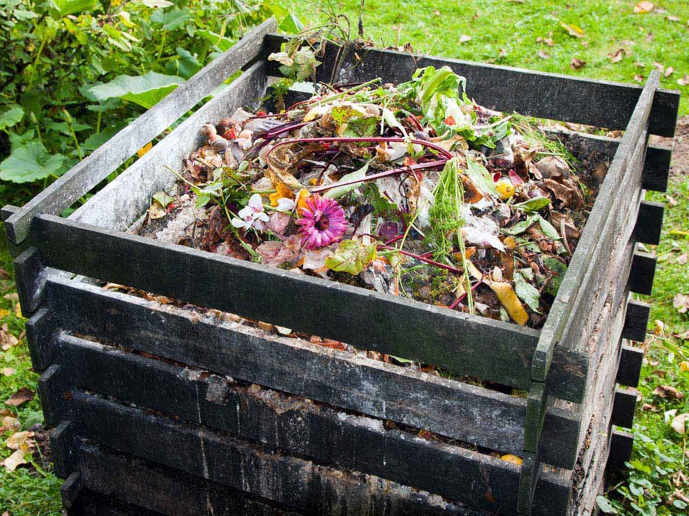
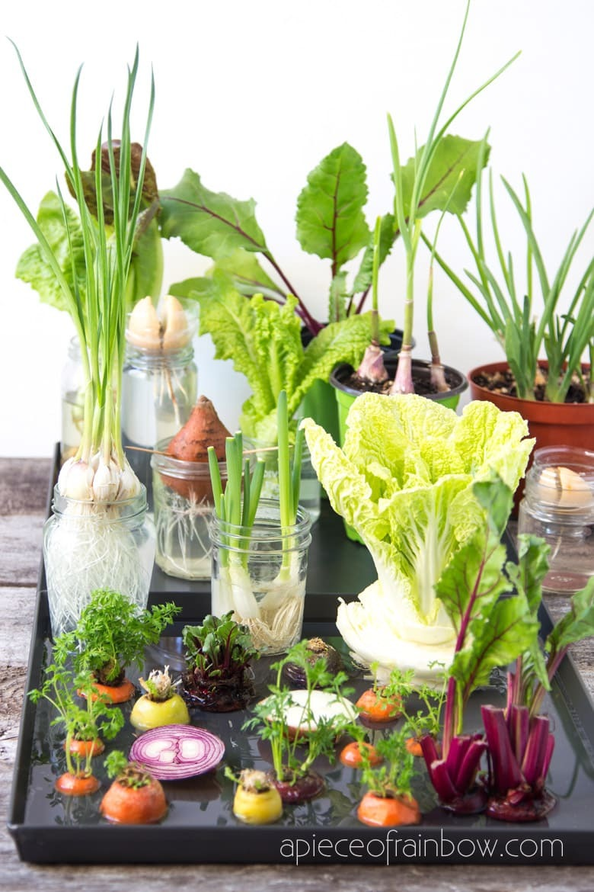
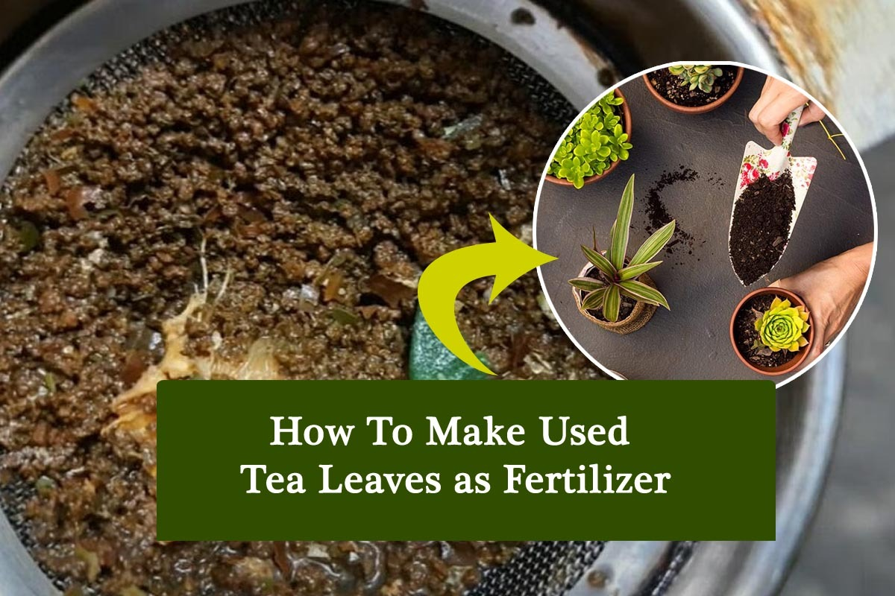
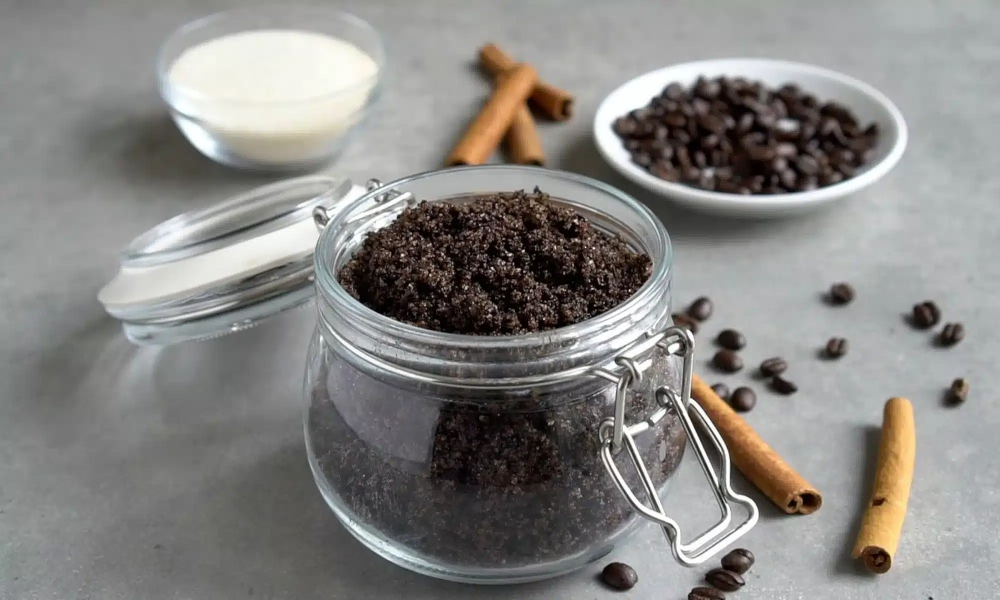
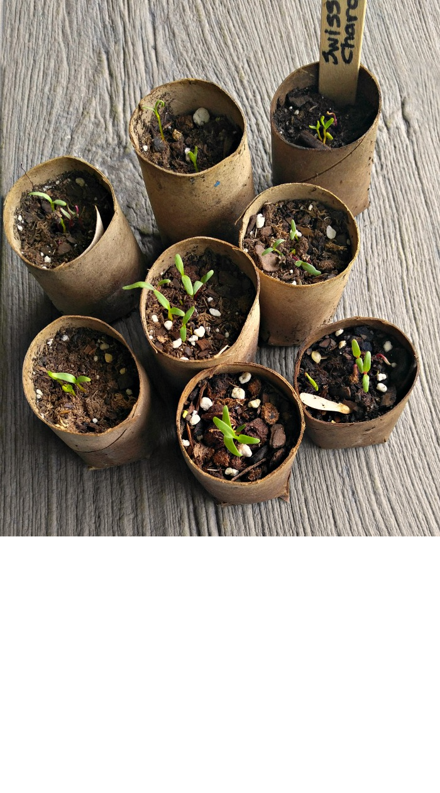
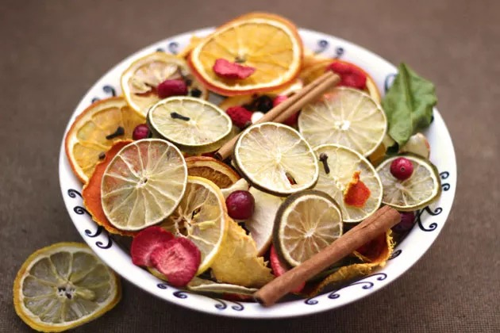
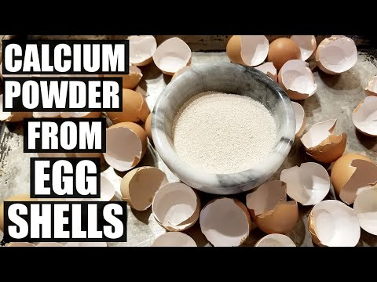
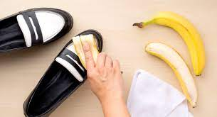
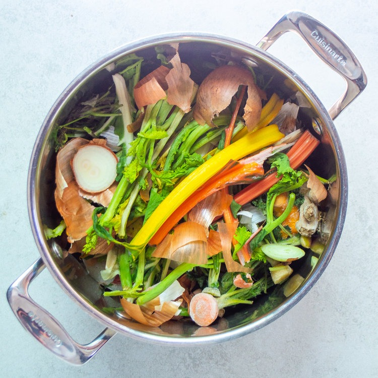

#1.Homemade Compost Bin:

How much waste do you need?
- Large plastic bin
- drill
- brown and green organic waste
- soil
- Drill holes in the bin for ventilation
- Layer brown waste (leaves, paper) and green waste (kitchen scraps) with soil
- Mix and turn occasionally
- Compost will form in a few months.
#2.Citrus Peel Bird Feeders:

How much waste do you need?
- Hollowed citrus peels
- twine
- birdseed.
- Hollow out citrus peels
- make a hole at the top, thread twine
- fill with birdseed
- and hang in your garden to attract birds.

#3.Kitchen Scrap Herb Garden:
How much waste do you need?
- Eggshells
- citrus peels
- herb seeds
- Fill eggshells or citrus peels with soil
- plant herb seeds
- and place them on a sunny windowsill
- They'll sprout and grow!
#4.Tea Leaf Fertilizer:

How much waste do you need?
- Used tea leaves
- water
- Soak used tea leaves in water overnight
- Strain the tea and use it to water your plants for a natural fertilizer boost.
#5.Coffee Grounds Exfoliating Scrub:

How much waste do you need?
- Coffee grounds
- coconut oil
- sugar
- Mix coffee grounds
- coconut oil
- and sugar to create an exfoliating scrub
- Use in the shower to rejuvenate your skin

#6.Biodegradable Seed Starters:
How much waste do you need?
- Toilet paper rolls
- soil
- seeds
- Fill toilet paper rolls with soil
- plant seeds
- and place them in a tray
- When the seedlings are ready, plant them directly into the ground.
#7.Fruit Peel Potpourri:

How much waste do you need?
- Citrus peels
- dried flowers
- spices
- Mix dried flowers and spices with citrus peels
- Let them dry
- and then place them in bowls around your home for natural fragrance.
#8.Eggshell Calcium Supplement:

How much waste do you need?
- Crushed eggshells.
- Crush cleaned eggshells into a fine powder
- Add a pinch to your meals for a calcium boost.
#9.Banana Peel Shoe Shine:

How much waste do you need?
- Banana peels.
- Rub the inside of a banana peel on your leather shoes
- then buff with a soft cloth for a natural shine.
#10.Vegetable Scraps Broth:

How much waste do you need?
- Vegetable scraps
- Water
- Collect vegetable peels and scraps
- Boil them in water to create a flavorful homemade vegetable broth.